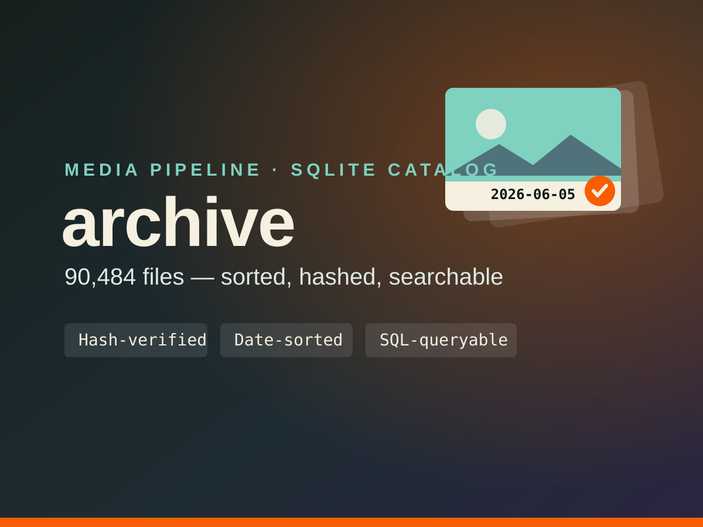

Photo & Video Archive Toolkit

Overview
A personal media-archival system that turns a chaotic 90k-file photo and video collection into one date-sorted, integrity-checked, instantly searchable archive. The core engine reads each file's EXIF capture date, files it under PhotoArchive or VideoArchive by date, BLAKE2b-hashes every copy to prove it is byte-perfect, skips anything already backed up, and records it in a SQLite catalog so the drive never needs rescanning. Sidecars (Lightroom .xmp, .aae, DJI .lrf/.srt) travel with their media. A pull → cull → project-SSD workflow then queries the catalog by camera, GPS, orientation, drone, or 4K duration, pulls a hash-verified selection onto a working drive, and promotes the keepers to a project SSD. One-click .command buttons and an Apple Shortcuts action make 'dump my cards' a single tap.
Stack
Features
- Copy-only, hash-verified ingest — BLAKE2b-checksums every file; originals are never modified
- Date-sorts photos and videos into PhotoArchive / VideoArchive by EXIF capture date
- Idempotent dedup: re-running only copies what is new, never duplicates
- Self-cataloging SQLite index of 90,484 files, queryable by camera, GPS, orientation, drone, and 4K duration
- Pull → cull → project-SSD workflow with saved query presets and hash-verified selections
- One-click 'Dump Cards' buttons plus an Apple Shortcuts action for menu-bar / Siri triggering
Key Technical Challenge
Making the pipeline safe to trust and safe to re-run: every copy is hash-verified against its source, the whole process is idempotent (re-running only copies what is new), and sources are never modified — so a card can be formatted only after the tool confirms a byte-perfect, cataloged copy exists.
Lessons Learned
When the data is irreplaceable, copy-only, verify-before-trust, and idempotent re-runs matter more than speed. A self-cataloging archive — index on write, never rescan — is what makes 90k files actually usable: the SQLite catalog turns 'find the 4K geotagged drone clips over 30 seconds' into a single SQL query.